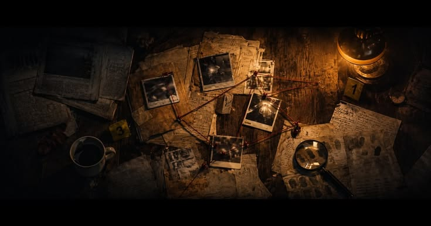

Investigaciones llenas de pistas, sospechosos y preguntas que aún esperan una respuesta. Desapariciones misteriosas, crímenes sin esclarecer y acontecimientos inexplicables forman parte de historias en las que la verdad sigue oculta y cada detalle podría ser importante.